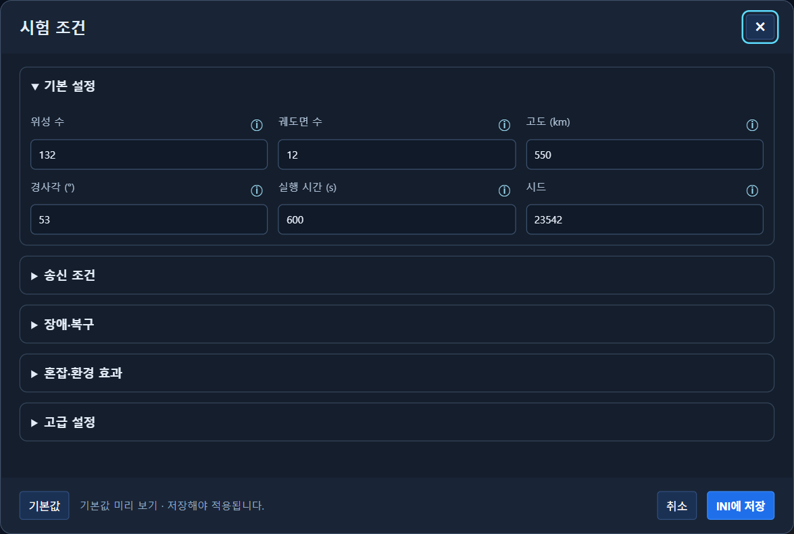

WINDOWS · 버전 1.0.0
LEO Network Simulator
사용자 설명서
저궤도 위성망에서 패킷 전달, 장애 복구 및 라우팅 알고리즘을 시험하는 방법을 안내합니다.
바로 시작하려면 설치와 첫 실행을 참고하세요. 프로그램 상단의 작은 문서 아이콘으로 이 설명서를 다시 열 수 있습니다.
파일로 보관하려면 상단의 PDF 저장을 누른 뒤 인쇄 창의 대상에서 PDF로 저장을 선택하세요.
사용자 설명서 · 01
프로그램과 화면 구성
시험 조건을 정하고 실행한 뒤, 지도와 수신 결과에서 같은 실행을 살펴봅니다.
| 화면 | 하는 일 |
|---|---|
| 상단 재생 도구 | 현재 결과의 재생·일시 정지, 시각 이동, 재생 속도 조절과 결과 불러오기 |
| 왼쪽 지도 | 위성 위치, 위성 간 연결(ISL), 지상 연결(GSL) 및 계획 경로 확인 |
| 오른쪽 시험 설정 | 시험 조건과 알고리즘을 선택하고 새 실행 또는 비교 실행 시작 |
| 오른쪽 수신 결과 | 전달률·수신 지연·처리량, 시간별 그래프와 실행 비교 확인 |

사용자 설명서 · 02
설치와 첫 실행
Windows x64 환경에서 배포 ZIP을 모두 풀고 sim-ui.exe를 실행합니다.
실행 전 준비
Windows 10 또는 11, Microsoft Edge WebView2 Runtime, Windows UI 호스트에 필요한 .NET Framework를 사용합니다. 설정과 기본 실행 결과는 EXE 폴더에 저장됩니다. 결과 저장 위치만 별도로 지정할 수 있습니다.
- ZIP 전체를 한 폴더에 풉니다. sim-ui.exe는 settings, engine, data와 같은 배포 폴더에서 실행합니다.
- 오른쪽 시험 설정에서 시험 조건을 ‘기본 통신 · 이동 노드 대상’으로, 알고리즘을 Dijkstra · 지연 최소로 선택합니다.
- 실행을 누르고 계산 완료를 확인합니다. 지도와 수신 결과가 새 실행으로 전환됩니다.
- 시간 슬라이더를 움직이거나 재생을 눌러 지도를 확인합니다. 다시 열 수 있도록 data/runs 안의 실행 ID 폴더를 보관합니다.
| 여는 파일 | 사용 범위 |
|---|---|
| sim-ui.exe | 조건 수정, 새 실행, 비교 실행, 결과 열기 및 지도 재생 |
| index.html | 직접 열면 저장된 결과를 재생합니다. 계산 및 INI 수정은 EXE에서 진행합니다. |
사용자 설명서 · 03
시험 조건과 알고리즘 선택
시험 조건은 위성망·송신·장애 등 입력을 정하고, 알고리즘은 그 안에서 경로를 고르는 방법을 정합니다.
추가 시험 표시는 기본 목록에 더해 INI에 등록된 전체 시험 구성을 보여줍니다. 조건을 선택하면 목록 아래 설명과 설정 요약이 갱신됩니다. 실행을 누르면 선택한 조건으로 새 결과가 생성됩니다.
| 조건 | 기본 설정에서 확인하는 내용 |
|---|---|
| 기본 통신 · 이동 노드 대상 | 9개 송신 노드가 각각 2초 간격으로 이동 노드에 송신 |
| 고부하 통신 · 12번 노드 고정 | 9개 송신 노드가 각각 0.001초 간격으로 12번 노드에 송신 |
| 반복 링크 장애 | 60·120·180초마다 고정 출발·목적 흐름의 기준 경로에서 위성 간 링크 하나를 각각 30초 동안 끊어 우회와 수신 재개 확인 |
| 무작위 링크 장애 | 30~570초 사이에 무작위 링크 장애 20건을 각각 30초씩 적용해 전달률·지연 확인. 같은 입력과 장애 시드는 동일 장애 일정을 재현 |

사용자 설명서 · 04
알고리즘과 비교 목적
알고리즘을 고르면 선택한 INI 구성에 저장됩니다. 저장된 지도와 수신 결과는 새 실행이 끝날 때까지 그 실행의 데이터를 표시합니다.
| 화면 표시 | 경로 선택 기준 |
|---|---|
| Dijkstra · 지연 최소 | 전파 지연을 최소화하는 경로 |
| Dijkstra · 홉 최소 | 홉 수를 최소화하는 경로 |
| MCSR-LS | 지연 우선 |
| MCSR-TS | 처리량 우선. 지연 상한을 지정할 수 있음 |
| MCSR-HR | 신뢰성 우선. 지터 제약을 지정할 수 있음 |
시험 목적별 선택
- 구성을 처음 확인할 때는 ‘기본 통신 · 이동 노드 대상’을 한 번 실행해 지도·송수신 상태를 확인합니다.
- 경로 복구를 비교할 때는 반복 링크 장애 또는 무작위 링크 장애를 선택하고 비교 실행을 사용합니다.
- 부하에 따른 차이를 살펴볼 때는 패킷 크기를 유지한 채 송신률이나 송신 노드 수를 단계적으로 바꿉니다. 같은 단계에서는 입력을 고정한 채 알고리즘을 비교합니다.
사용자 설명서 · 05
조건 수정과 기본값
조건 수정에서 변경한 값은 INI에 저장을 누르면 다음 실행에 적용됩니다.
시간 가정을 선택하면 DS·CSIB 설정이 화면에서 사라지며, INI에 저장하면 CSIB가 꺼집니다. DS·CSIB를 시험하려면 실제 패킷을 선택하세요.
- 시험 조건을 선택한 뒤 조건 수정을 누릅니다.
- 기본 설정과 송신 조건을 확인합니다. 링크·큐, MCSR, DS·CSIB는 고급 설정에서 변경합니다. 항목 옆 ⓘ에서 단위와 변경 효과를 읽을 수 있습니다.
- 제공 설정을 다시 불러오려면 기본값을 누릅니다. 적용하려면 INI에 저장, 이번 편집을 버리려면 취소를 누릅니다.
기본값은 선택한 구성의 제공 섹션을 기준으로 하며 상속값은 현재 상위 설정을 따릅니다. 직접 추가한 구성은 제공 기본값이 없으므로 값을 직접 편집합니다.

| 조정할 값 | 관찰할 항목 |
|---|---|
| 위성 수·궤도면·고도 | 위성 수는 궤도면 수로 나누어 떨어져야 합니다. 접속 기회와 경로 길이의 변화를 관찰합니다. |
| 송신률·송신 간격·패킷 크기 | 발생 패킷 수, 큐 대기와 폐기, 처리량 변화를 관찰합니다. |
| 최소 고도각·링크 용량·큐 | 접속 범위, 병목 및 링크 포화의 변화를 관찰합니다. |
| 시드·실행 시간 | 무작위 입력을 재현하고, 장애 발생과 복구가 관측 구간에 들어오도록 설정합니다. |
| 송신 노드·목적지·시작/종료 | 어느 지상국이 언제 어디로 송신하는지 정합니다. 흐름별 전달률과 지연을 비교합니다. |
| 장애 일정·환경 혼잡 | 링크 단절, 전송 용량 감소, 추가 지연·손실을 설정합니다. 우회 경로와 수신 재개를 관찰합니다. |
| MCSR 제약·예비 경로 | TS의 지연 상한과 HR의 지터 제약은 경로 후보를 제한합니다. 예비 경로는 장애 시 먼저 시도할 경로를 보관합니다. |
| 제어 통신·DS/CSIB | 상태 감지·전파와 지역 상태 교환을 조정합니다. 제어 전송량과 정보 수렴 시간을 관찰합니다. |
| 결과 기록 | 경로 저장 범위와 패킷 추적을 정합니다. 상세 기록을 켜면 결과 폴더 크기가 늘어납니다. |
사용자 설명서 · 06
INI와 외부 일정 편집
설정 파일·저장 위치의 실행 결과 저장 폴더에서 현재 위치를 확인할 수 있습니다. 폴더 선택이나 기본 위치로 변경한 뒤 앱을 다시 엽니다.
자주 쓰는 값은 조건 수정에서, INI 원문은 설정 파일·저장 위치의 INI 파일 열기에서 확인합니다.
- 시험 설정에서 설정 파일·저장 위치를 펼치고 INI 파일 열기를 누릅니다.
- 프로그램 폴더의
settings/simulations/Network/scenarios.ini를 UTF-8로 저장합니다. - 프로그램에서 설정 새로고침을 누릅니다. 새 시험은 INI로 시험 추가를 참고하세요.
| 내용 | 형식 또는 위치 |
|---|---|
| 링크 직접 장애 | 12-13@60+30 → 위성 12와 13 사이 링크를 60초에 30초간 끊음 |
| 기준 경로 장애 | route@60+30 → 기준 경로의 위성 간 링크를 60초에 30초간 끊음 |
| 계획된 ISL 개폐 | time,event,satA,satB 열이 있는 CSV. event에는 failure 또는 restore를 사용하며 시간 단위는 초 |
| 지역 혼잡 | 환경 조건에서 링크, 위성, 궤도면, 지도 구역 등을 지정해 용량·버퍼·지연·지터·손실을 설정 |
외부 일정은 INI에 경로를 지정합니다. 기존 시나리오의 개폐 일정이나 장애 기록이 적용되는 경우 조건 수정 화면 상단에 표시됩니다. 상대 경로는 진입 INI의 위치를 기준으로 해석합니다. 개폐 일정은 고정 격자에 있는 링크를 사용합니다. 기존 구성 형식과 지원 키는 README.md의 시나리오 설정 항목에서 확인할 수 있습니다.
사용자 설명서
INI로 시험 추가
1. 설정 파일 열기
시험 설정에서 설정 파일·저장 위치 → INI 파일 열기를 누릅니다. 메모장에서 scenarios.ini가 열립니다.

2. 파일 맨 아래에 시험 추가
아래 예시를 붙여 넣습니다. 이름이 이미 쓰였다면 MyLinkTest를 바꿉니다. Ctrl+S로 같은 파일에 UTF-8 형식으로 저장합니다.
[Config MyLinkTest]
displayName = "내 단일 링크 시험"
extends = Dijkstra132Pair
sim-time-limit = 100s
*.station[0].traffic.sendInterval = 2s
*.islFailures.schedule = "route@60+30"기존 단일 구간 시험을 바탕으로 100초 동안 실행합니다. 지상국 0은 2초마다 패킷을 보내고, 60초에 기준 경로의 위성 간 링크를 30초 동안 끊습니다.
3. 시험 목록에서 선택
앱에서 설정 새로고침을 누른 뒤 시험 조건 → 내 단일 링크 시험을 선택합니다. 실행 시간이 100초인지 확인하고, 조건 수정에서 송신 간격과 장애 일정을 확인합니다. 원하는 알고리즘을 선택하고 실행합니다.

시험이 보이지 않을 때
- INI 파일 열기로 연 파일에 저장했는지 확인합니다. 결과 폴더의 INI는 보관된 실행에 사용한 사본입니다.
- 실행할 구성에는 고유한 이름을 사용하고
abstract = true는 생략합니다. 상속 전용 블록을 쓰려면 실행용 구성을 따로 만들고extends에 상속 전용 블록과 기준 시험을 적습니다. - 직접 추가한 실행용 구성은 기본 목록에 나옵니다. 조건 수정 → 기본값은 프로그램이 기본값을 제공하는 구성에서 사용할 수 있습니다.
시험을 추가할 때 자주 쓰는 설정
| INI 항목 | 의미와 입력 예 |
|---|---|
[Config 이름]displayNamedescription | 구성의 고유 이름, 화면의 표시 이름, 시험 설명입니다. 표시 이름을 생략하면 구성 이름을 그대로 사용합니다. |
extendsabstract | 기준 구성의 값을 상속합니다. 새 블록의 값이 우선하고, 여러 상위 구성을 나열하면 앞에 적은 구성이 우선합니다. abstract = true인 구성은 상속용으로 숨겨집니다. |
additional | true로 지정하면 추가 시험 표시를 켰을 때 목록에 나옵니다. |
sim-time-limitseed-0-mt | 시뮬레이션 종료 시각과 난수 시드입니다. 예를 들어 100s로 실행 시간을 지정합니다. |
*.numSatellites*.**.planeCount | 위성 수와 궤도면 수입니다. 위성 수가 궤도면 수로 나누어 떨어지는 조합을 사용합니다. |
*.constellationCreator.altitude*.constellationCreator.inclination | 궤도의 높이(km)와 경사각(°)입니다. 위성의 지상 가시 범위와 접속 기회에 영향을 줍니다. |
*.station[0].traffic.enabled*.station[0].traffic.dstType*.station[0].traffic.dstStation | 지상국 0의 송신 여부, 목적지 유형과 목적지 번호입니다. [0..3]은 0~3번에 적용합니다. |
*.station[0].traffic.sendInterval*.station[0].traffic.packetSize | 송신 간격과 패킷 크기입니다. 예를 들어 2s와 1000B를 사용합니다. |
*.station[0].traffic.startTime*.station[0].traffic.endTime | 새 패킷을 만들기 시작하고 끝내는 시각입니다. 시작 시각은 uniform(1s, 3s)처럼 범위도 지정할 수 있습니다. |
*.topologyControl.islDatarate*.topologyControl.groundlinkDatarate | 위성 간 링크와 지상·위성 링크의 전송 용량입니다. 예를 들어 100Mbps를 사용합니다. |
*.topologyControl.minimumElevation*.topologyControl.updateInterval | 지상 접속에 필요한 최소 고도각(°)과 위치·연결 갱신 간격입니다. 간격을 줄이면 더 자주 계산합니다. |
*.islFailures.schedule | 장애 일정입니다. "route@60+30"은 기준 경로의 링크를, "12-13@60+30"은 위성 12와 13의 링크를 60초에 30초 동안 끊습니다. |
*.islFailures.randomFailures*.islFailures.randomStart*.islFailures.randomEnd*.islFailures.randomDuration | 무작위 장애 수, 발생 구간의 시작·끝, 장애 한 건의 지속 시간입니다. |
*.satellite[*].net.routing.algorithm | 라우팅 알고리즘입니다. 프로그램의 알고리즘 목록에서도 선택할 수 있습니다. |
환경 조건, MCSR·CSIB 및 결과 기록 항목은 조건 수정의 ⓘ 도움말에서 확인할 수 있습니다.
사용자 설명서 · 07
지도 재생과 결과 열기
현재 재생 중인 지도와 시험 설정 설정은 화면의 상태 표시에서 구분합니다.
| 열기 방식 | 표시되는 내용 |
|---|---|
| 실행 결과 열기 | EXE의 보관 목록에서 시험 조건·알고리즘·실행 ID를 검색합니다. 외부 결과는 외부 폴더 열기를 사용합니다. 보관된 설정과 사건으로 위성 위치·링크·경로를 재생하며, 저장된 수신 통계를 표시합니다. |
- 외부 폴더를 열거나 HTML로 직접 열었을 때는 manifest.json이 들어 있는 data/runs/<실행 ID> 폴더를 선택합니다.
- 결과는 0초에서 열립니다. 종료 후 재생을 누르면 처음부터 다시 시작합니다. 슬라이더 또는 −1s / +1s로 관찰 시각을 이동하고, 재생 속도를 바꿔 움직임을 확인합니다. 배율의 직접 입력에서 0.00001~60배를 지정할 수 있습니다. 지도 크게 보기로 지도 영역을 넓히고 패널 열기로 오른쪽을 복원합니다. 넓은 창에서는 지도와 패널 경계를 끌어 패널 너비를 조절할 수 있습니다. 지도에서 휠로 가리킨 곳을 확대·축소하고, 확대한 지도는 마우스로 끌어 이동합니다.
- 노드에 마우스를 올리면 지상국은 직전 집계 구간의 송수신량과 종단 간 평균 지연을, 위성은 현재 연결과 단절 상대를 표시합니다. 경로 표에서 경로를 선택하면 경유 위성의 이전·다음 노드도 확인할 수 있습니다. ISLs, GSLs, Coverage, Active Routes, Labels 체크박스로 표시 항목을 조절합니다.
- 한 줄에 나란히 있는 출발지·목적지 필터로 관심 경로를 찾고 최근 계획 경로 표에서 계획 경로를 확인합니다.
사용자 설명서 · 08
수신 결과와 복구 지표 읽기
지도와 경로 표는 계획 경로를, 수신 결과는 패킷이 실제로 처리된 시뮬레이션 결과를 보여줍니다.
수신 결과의 주요 지표 8개는 패널이 넓으면 네 열 두 줄로 표시됩니다. 화면을 줄이거나 패널을 좁히면 두 열로 바뀝니다.
- 시간별 그래프는 수신 결과의 자세한 결과 버튼으로 연 창에서 지표와 대상 통신을 선택해 시간에 따른 처리량·지연 등을 보는 곳입니다. 제어 지표는 전체 네트워크를 집계합니다.
- 출발지·목적지별 수신은 각 노드 쌍의 전달률과 지연을 확인할 때 사용합니다.
- 제어·계산·장애 복구는 알고리즘 비교 시 제어 메시지 전송량, 경로 계산 작업량, 장애 감지와 수신 재개 시점을 확인할 때 같은 창의 아래쪽을 봅니다.
경로 계산 시간은 실제 PC에서 각 작업에 걸린 누적 시간입니다. 상위 항목에 포함되는 세부 시간은 합산하지 않습니다. 링크 장애 기록에서 시뮬레이션 시각, 위성 링크, 단절·재연결, 감지와 정보 수렴을 확인할 수 있습니다. 영향받은 통신의 보기 버튼을 누르면 첫 수신과 안정 복구 시점 및 안정 복구 기준을 확인합니다.

| 항목 | 읽는 기준 |
|---|---|
| 전송 중 | 시뮬레이션이 끝날 때까지 수신되거나 폐기되지 않은 패킷 수입니다. 큐 대기와 전송 중 패킷을 포함합니다. |
| 전달률 | 수신 ÷ 발생 × 100. 발생에는 위성 접속·초기 경로를 찾지 못한 시도도 포함 |
| 수신 지연·지터 | 수신한 패킷의 종단 간 지연과 그 변동. 수신이 없을 때 빈 값은 미관측 |
| 처리량 | 수신한 데이터 페이로드를 집계 시간으로 나눈 값. 그래프에서 시간별 변동 확인 |
| 첫 수신 / 안정 복구 | 장애 이후 생성된 첫 패킷의 수신 시각과, 이후 두 관측 구간에서 정해진 전달 기준을 만족한 시각을 각각 확인 |
| 제어 전송·정보 수렴 | 상태 전달에 사용한 전송량과 장애 정보가 대상 노드들에 반영되기까지의 시간 |
사용자 설명서 · 09
비교 실행과 반복 실험
비교 실행은 새 결과를 계산합니다. 수신 결과의 실행 비교에서는 완료된 결과를 다시 비교합니다.
- 시험 조건을 선택하고 비교 실행을 누릅니다. 비교할 알고리즘을 체크합니다.
- 반복 횟수 1회·10회·30회를 고릅니다. 전체 실행 횟수는 선택한 알고리즘 수 × 반복 횟수입니다. 자동에서는 자원 여유에 따라 엔진을 최대 2개 실행합니다. 알고리즘별 실제 계산 시간을 비교할 때는 순차를 선택합니다.
- 필요하면 고급 설정에서 시작 시드, 준비 구간과 종료 관측 구간을 설정하고 실행합니다.
- 두 실행의 비교 창에서 동일 조건 여부와 전달률·지연을 확인합니다. 장애를 선택하면 단절 전후의 수신량과 흐름별 첫 수신·안정 복구 시각이 표시됩니다. 이전에 계산한 결과는 수신 결과 → 실행 비교에서 파일 또는 보관 이력으로 엽니다. 완료된 반복 결과는 반복 실험 → 통계 보기에서 확인합니다.
같은 시드의 알고리즘은 공통 송신 입력·장애 사건·SRD를 사용합니다. 준비 구간에서 생성된 패킷은 측정에서 제외되고, 종료 관측 구간에는 새 데이터 패킷 생성을 멈춥니다.

사용자 설명서 · 10
결과 보관과 문제 해결
결과는 실행 ID 폴더 단위로 복사하면 다른 PC에서도 열 수 있습니다.
| 파일 또는 폴더 | 보관 이유 |
|---|---|
| manifest.json | 실행 식별자와 파일 해시. 나머지 파일과 함께 유지 |
| config/ · inputs/ · normalized.json | 당시 INI, 외부 입력, 실제 적용한 정규화 설정 |
| routes.csv · summary.json | 계획 경로와 패킷 수신·제어·계산 통계 |
| timeseries.csv · network-events.jsonl | 시간별 통계 및 장애·혼잡·제어 관련 기록 |
| data/experiments/<실험 ID> | 반복 실행 목록·공통 입력·통계. 관련 data/runs 폴더도 함께 보관 |
자주 발생하는 상황
| 증상 | 확인 방법 |
|---|---|
| EXE 창이 뜨지 않거나 지도가 검게 보임 | 배포 ZIP을 전체 해제했는지, data/earth.png가 있는지, WebView2가 설치되었는지 확인합니다. 실행 중인 다른 sim-ui 인스턴스가 있으면 닫고 다시 엽니다. |
| 폴더를 열 때 오류가 남 | 개별 실행 ID 폴더를 선택했는지 확인합니다. 누락되거나 수정된 파일은 원래 결과에서 다시 복사합니다. |
| 설정이나 실행 버튼이 비활성 | index.html을 직접 열었다면 sim-ui.exe로 전환합니다. 실행 중이라면 완료되거나 중지될 때까지 기다립니다. |
| 비교가 다른 조건으로 표시됨 | 모델·엔진, 공통 시나리오, 장애 사건 및 측정 구간이 같은지 확인합니다. 필요하면 비교 실행으로 다시 생성합니다. |
실행 중에는 상단에 준비·계산·결과 읽기 상태가 표시되며, 지도 크게 보기에서도 중지할 수 있습니다. 중지하거나 실패한 비교는 직전 완료 결과를 유지합니다. 이미 끝난 개별 실행은 각 실행 폴더에서 확인할 수 있습니다.